rDock/2006.1/901
Copyright © 2006 Vernalis
| Revision History | |
|---|---|
| Revision Added Acknowledgements section | 27/09/2006 |
| Revision Completed concise reference guide (at least some content in all sections) | 26/06/2006 |
| Revision Concise reference guide in progress | 20/06/2006 |
| Revision Initial draft describing rDock/enspiral_dev/449 receptor .prm file | 26/01/2006 |
Table of Contents
List of Tables
List of Examples
It is intended to develop this document into a full reference guide for the rDock platform, describing the software tools, parameter files, scoring functions, and search engines. The reader is encouraged to cross-reference the descriptions with the corresponding source code files to discover the finer implementation details.
Third-party source code. Two third-party C++ libraries are included within the rDock source code, to provide support for specific numerical calculations. The source code for each library can be distributed freely without licensing restrictions and we are grateful to the respective authors for their contributions.
The rDock platform is a suite of command-line tools for high-throughput docking and virtual screening. The programs and methods were developed and validated over a number of years at RiboTargets (more recently, Vernalis) for proprietary use. The original program (RiboDock) was designed for high-throughput virtual screening of large ligand libraries against RNA targets, in particular the bacterial ribosome. Since 2002 the programs have been substantially rewritten and validated for docking of drug-like ligands to protein and RNA targets. A variety of experimental restraints can be incorporated into the docking calculation, in support of an integrated Structure-Based Drug Design process.
Before launching rDock, make sure the following environment variable are defined. Precise details are likely to be site-specific.
RBT_ROOT environment variable. $RBT_ROOT environment variable should be defined to point to
the rDock installation directory.
RBT_HOME environment variable. $RBT_HOME environment variable is optional, but can defined to
to point to a user project directory containing rDock input files and customised
data files.
PATH environment variable. $RBT_ROOT/bin should be added to the $PATH
environment variable.
LD_LIBRARY_PATH. $RBT_ROOT/lib should be added to the
$LD_LIBRARY_PATH environment variable.
Input file locations. The search path for the majority of input files for rDock is:
$RBT_HOME, if defined$RBT_ROOT/data/.
For example, the default location for scoring function files is
$RBT_ROOT/data/sf/.The exception is that input ligand SD files are always specified as
an absolute path. If you wish to customise a scoring function or docking protocol,
it is sufficient to copy the relevant file to the current working directory or to
$RBT_HOME, and to modify the copied file.
Launching rDock. For small scale experimentation, the rDock executables can be launched directly from the command line. However, serious virtual screening campaigns will likely need access to a compute farm. In common with other docking tools, rDock uses the embarrassingly parallel approach to distributed computing. Large ligand libraries are split into smaller chunks, each of which is docked independently on a single machine. Docking jobs are controlled by a distributed resource manager (DRM) such as Condor. The RBT_TEST suite provides some examples of the generation of Condor command files for rDock.
Macromolecular targets (protein or RNA) are input from Tripos MOL2 files
(RbtMOL2FileSource) or from pairs of Charmm PSF
(RbtPsfFileSource) and CRD
(RbtCrdFileSource) files. Ligands are input from MDL SD files
(RbtMdlFileSource). Explicit structural waters are input
optionally from PDB files (RbtPdbFileSource). Ligand docking
poses are output to MDL SD files.
The rDock scoring functions have been defined and validated for implicit non-polar hydrogen (extended carbon) models only. If you provide all-atom models, be aware that the non-polar hydrogens will be removed automatically. Polar hydrogens must be defined explicitly in the molecular files, and are not added by rDock. Positive ionisable and negative ionisable groups can be automatically protonated and deprotonated respectively to create common charged groups such as guanidinium and carboxylic acid groups.
MOL2 is now the preferred file format for rDock as it eliminates many of the atom typing issues inherent in preparing and loading PSF files. The use of PSF/CRD files is strongly discouraged. The recommendation is to prepare an all-atom MOL2 file with correct Tripos atom types assigned, and allow rDock to remove non-polar hydrogens on-the-fly.
Atomic properties. rDock requires the following properties to be defined per atom. Depending on the file format, these properties may be loaded directly from the molecular input file, or derived internally once the model is loaded.
$RBT_ROOT/data/RbtElements.dat)
The rDock scoring functions do not use partial charges and therefore partial charges do not have to be defined. The atomic radii are simplified radii defined per element, and are used for cavity mapping and in the polar scoring function term, but are not used in the vdW scoring function term. The latter has its own indepedent parameterisation based on the Tripos force field types.
Difference between formal charge and distributed formal charge. The formal charge on an atom is always an integer. For example, a charged
carboxylic acid group ( COO-) can be defined formally as a formal
double bond to a neutral oxygen sp2, and a formal single bond to a formally charged
oxygen sp3. In reality of course, both oxygens are equivalent. rDock distributes the
integer formal charge across all equivalent atoms in the charged group that are
topologically equivalent. In negatively charged acid groups, the formal charge is
distributed equally between the acid oxygens. In positively charged amines, the
formal charge is distributed equally between the hydrogens. In charged guanidinium,
amidinium, and imidazole groups, the central carbon also receives an equal portion
of the formal charge (in addition to the hydrogens). The distributed formal charge
is also known as the group charge. The polar scoring functions in rDock use the
distributed formal charge to scale the polar interaction strength of the polar
interactions.
Parsing a MOL2 file. MOLECULE, ATOM, BOND and
SUBSTRUCTURE records are parsed. The atom name, substructure
name, Cartesian coordinates and Tripos atom type are read directly for each atom.
The element type (atomic number) and formal hybridisation state are derived from the
Tripos type using an internal lookup table. Formal charges are not
read from the MOL2 file and do not have to be assigned correctly in the
file. Distributed formal charges are assigned directly by rDock based on standard
substructure and atom names as described below.
Parsing an SD file. Cartesian coordinates, element and formal charge are read directly for each atom.
Formal bond orders are read for each bond. Atom names are derived from element name
and atom ID ( e.g. C1, N2,
C3 etc). The substructure name is MOL. Formal
hybridisation states are derived internally for each atom based on connectivity
patterns and formal bond orders. The Tripos types are asssigned using internal rules
based on atomic number, formal hybridisation state and formal charges. The integer
formal charges are distributed automatically across all topologically equivalent
atoms in the charged group.
Assigning distributed formal charges to the receptor. rDock provides a file format independent method for assigning distributed formal
charges directly to the receptor atoms, which is used by the MOL2 and PSF/CRD file
readers. The method uses a lookup table based on standard substructure and atom
names, and does not require the integer formal charges to be assigned to operate
correctly. The lookup table file is
$RBT_ROOT/data/sf/RbtIonicAtoms.prm. Each section name
represents a substructure name that contains formally charged atoms. The entries
within the section represent the atom names and distributed formal charges for that
substructure name. The file provided with rDock contains entries for all standard
amino acids and nucleic acids, common metals, and specific entries required for
processing the GOLD CCDC/Astex validation sets.
You may have to extend RbtIonicAtoms.prm if you
are working with non-standard receptor substructure names and/or atom names,
in order for the distributed formal charges to be assigned
correctly.
Virtual screening is very rarely conducted against entire macromolecules. The usual practice is to dock small molecules in a much more confined region of interest. rDock makes a clear distinction between the region the ligand is allowed to explore (known here as the docking site), and the receptor atoms that need to be included in order to calculate the score correctly. The former is controlled by the cavity mapping algorithm, whilst the latter is scoring function dependent as it depends on the distance range of each component term (for example, vdW range >> polar range). For this reason, it is usual practice with rDock to prepare intact receptor files (rather than truncated spheres around the region of interest), and to allow each scoring function term to isolate the relevant receptor atoms within range of the docking site.
Dock provides two methods for defining the docking site:
Two sphere method
Reference ligand method
Two sphere method. The two sphere method aims to find cavities that are accessible to a small sphere (of typical atomic or solvent radius) but are inaccessible to a larger sphere. The larger sphere probe will eliminate flat and convex regions of the receptor surface, and also shallow cavities. The regions that remain and are accessible to the small sphere are likely to be the “nice well defined” cavities of interest for drug design purposes.
Procedure 4.1. Two sphere mapping algorithm
A grid is placed over the cavity mapping region, encompassing a sphere of radius=RADIUS, center=CENTER. Cavity mapping is restricted to this sphere. All cavities located will be wholly within this sphere. Any cavity that would otherwise protrude beyond the cavity mapping sphere will be truncated at the periphery of the sphere.
| 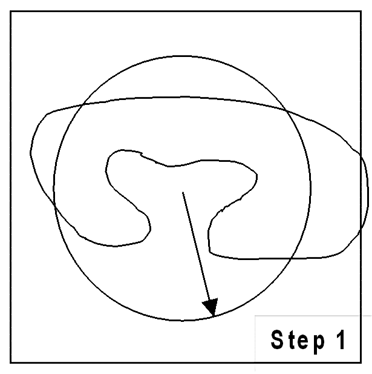 |
Grid points within the volume occupied by the receptor are excluded (coloured red). The radii of the receptor atoms are increased temporarily by VOL_INCR in this step.
| 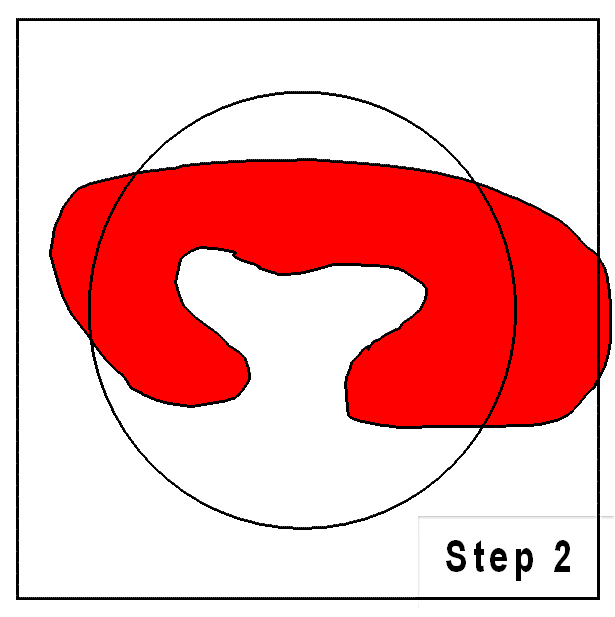 |
Probes of radii LARGE_SPHERE are placed on each remaining unallocated grid point and checked for clashes with receptor excluded volume. To eliminate edge effects, the grid is extended beyond the cavity mapping region by the diameter of the large sphere (for this step only). This allows the large probe to be placed on grid points outside of the cavity mapping region, yet partially protrude into the cavity mapping region.
| 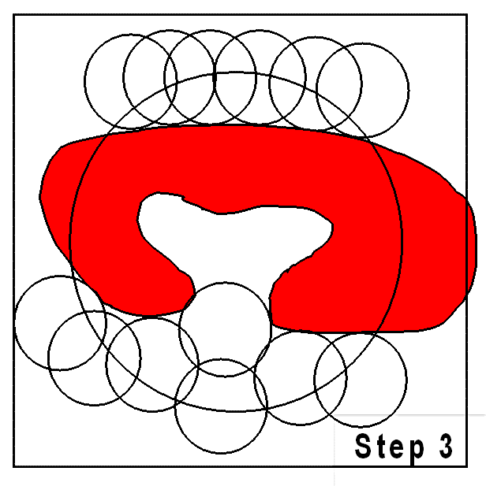 |
All grid points within the cavity mapping region that are accessible to the large probe are excluded (coloured green).
| 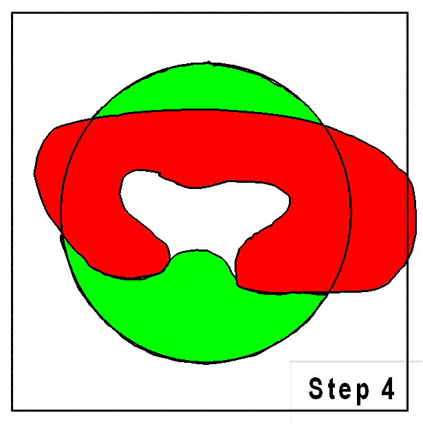 |
Probes of radii SMALL_SPHERE are placed on each remaining grid point and checked for clashes with receptor excluded volume (red) or large probe excluded volume (green)
| 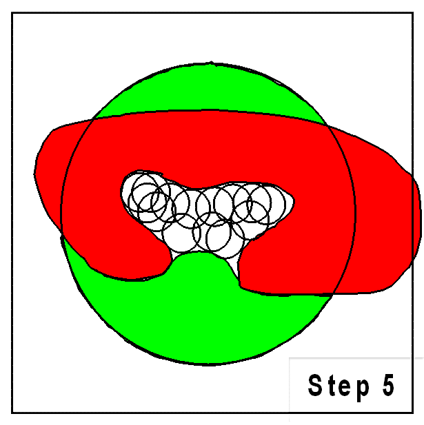 |
All grid points that are accessible to the small probe are selected (yellow).
| 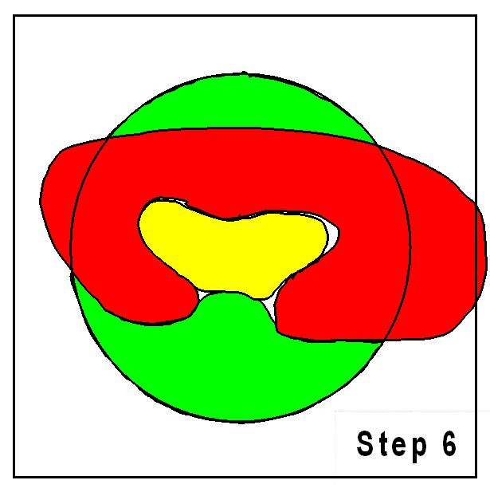 |
The final selection of cavity grid points is divided into distinct cavities (contiguous regions). In this example only one distinct cavity is found. User-defined filters of MIN_VOLUME and MAX_CAVITIES are applied at this stage to select a subset of cavities if required. Note that the filters will accept or reject intact cavities only.
| 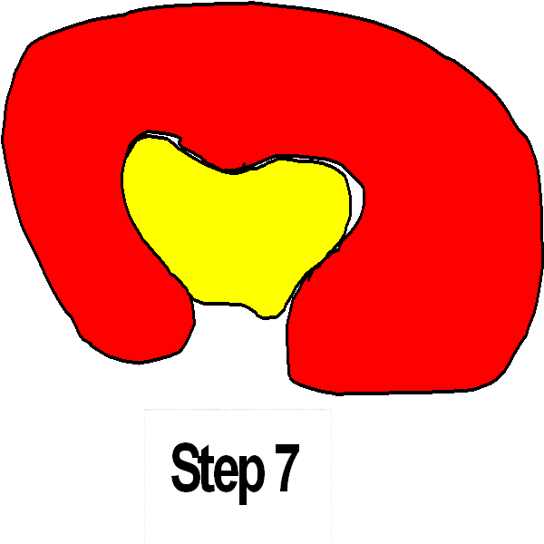 |
Reference ligand method. The reference ligand method provides a much easier option to define a docking volume of a given size around the binding mode of a known ligand, and is particularly appropriate for large scale automated validation experiments.
Reference coordinates are read from REF_MOL. A grid is placed over the cavity mapping region, encompassing overlapping spheres of radius=RADIUS, centered on each atom in REF_MOL. Grid points outside of the overlapping spheres are excluded (coloured green). Grid points within the volume occupied by the receptor are excluded (coloured red). The vdW radii of the receptor atoms are increased by VOL_INCR in this step.
| 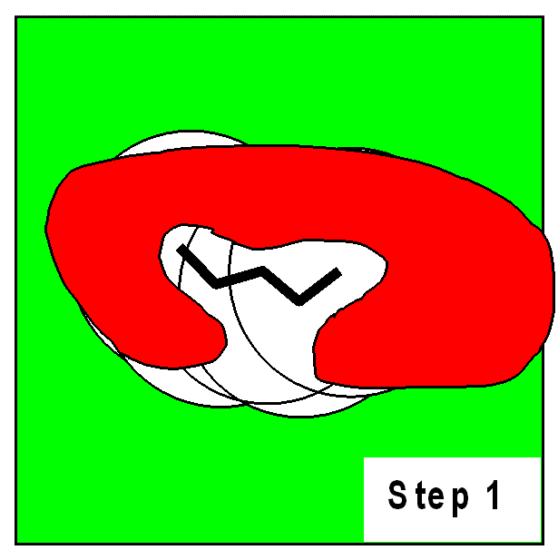 |
Probes of radii SMALL_SPHERE are placed on each remaining grid point and checked for clashes with red or green regions.
| 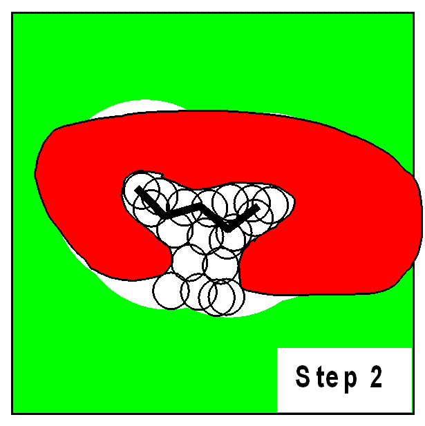 |
All grid points that are accessible to the small probe are selected (yellow).
| 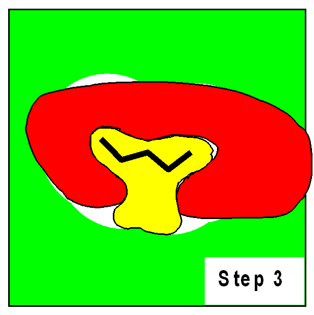 |
The final selection of cavity grid points is divided into distinct cavities (contiguous regions). In this example only one distinct cavity is found. User-defined filters of MIN_VOLUME and MAX_CAVITIES are applied at this stage to select a subset of cavities if required. Note that the filters will accept or reject intact cavities only.
| 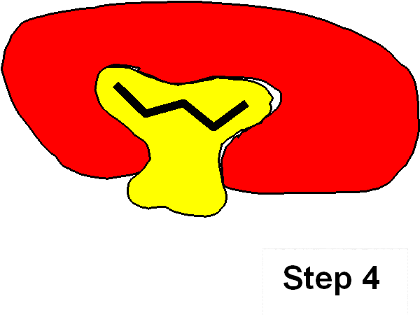 |
Table of Contents
This section does not pretend to be a comprehensive User Guide. It does, however, highlight the key steps the user must take for different docking strategies, and may serve as a useful checklist in writing such a guide in the future.
By standard docking, we refer to docking of a flexible, untethered ligand to a receptor in the absence of explicit structural waters or any experimental restraints.
Procedure 5.1. Standard docking workflow
Prepare a MOL2 file for the protein or nucleic acid target, taking into account the atom typing issues described above for MOL2 file parsing. The recommendation is to prepare an all-atom MOL2 file and allow rDock to remove the non-polar hydrogens on-the-fly.
Make sure that any non-standard atom names and substructure names are
defined in $RBT_ROOT/data/sf/RbtIonicAtoms.prm in
order for the assignment of distributed formal charges to work
correctly.
Make sure that the Tripos atom types are set correctly. rDock uses the Tripos types to derive other critical atomic properties such as atomic number and hybridisation state.
The rDock MOL2 parser was developed to read the CCDC/Astex
protein.mol2 files, therefore this validation
set is the de facto standard reference. You should
compare against the format of the CCDC/Astex MOL2 files if you are in
doubt as to whether a particular MOL2 file is suitable for rDock
Prepare a system definition file. At a minimum, you need to define the
receptor parameters, the cavity mapping parameters (SECTION
MAPPER) and the cavity restraint penalty (SECTION
CAVITY). Make sure you define the RECEPTOR_FLEX
parameter if you wish to activate sampling of terminal OH and NH3+ groups in
the vicinity of the docking site.
Generate the docking site (.as) file using rbcavity.
You will require a reference bound ligand structure in the coordinate space
of the receptor if you wish to use the reference ligand cavity mapping
method.
Prepare the ligand SD files you wish to dock, taking into account the atom typing issues described above for SD file parsing. In particular, make sure that formal charges and formal bond order are defined coherently so that there are no formal valence errors in the file. rDock will report any perceived valence errors but will dock the structures anyway. Note that rDock never samples bond lengths, bond angles, ring conformations, or non-rotatable bonds during docking so initial conformations should be reasonable.
Run a small test calculation to check that the system is defined
correctly. For example, run rbdock from the command
line with a small ligand SD file, with the score-only protocol (-p
score.prm) and with the -T 2 option to
generate verbose output. The output will include receptor atom properties,
ligand atom properties, flexibility parameters, scoring function parameters
and docking protocol parameters.
When satisfied, launch the full-scale calculations. A description of the various means of launching rDock is beyond the scope of this guide.
In tethered scaffold docking, the ligand poses are restricted and forced to overlay the substructure coordinates of a reference ligand. The procedure is largely as for standard docking, except that:
Ligand SD files must be prepared with the
rbtether utility to annotate each record with the
matching substructure atom indices, and to transform the coordinates of
each ligand so that the matching substructure coordinates are overlaid
with the reference substructure coordinates. This requires a Daylight
SMARTS toolkit license.
The system definition file should contain a SECTION
LIGAND to define which of the the ligand degrees of freedom
should be tethering to their reference values. Tethering can be applied
to position, orientation and dihedral degrees of freedom independently.
Note that the tethers are applied directly within the chromosome
representation used by the search engine (where they affect the
randomisation and mutation operators), and therefore external restraint
penalty functions to enforce the tethers are not required.
The reference state values for each tethered degree of freedom are
defined directly from the initial conformation of each ligand as
read from the input SD file, and not from the
reference SD file used by rbtether. This is why
the ligand coordinates are transformed by
rbtether, such that each ligand record can act
as its own reference state. The reference SD file used by
rbtether is not referred to by the docking
calculation itself.
It follows from the above that tethered ligand docking is
inappropriate for input ligand SD files that have not already been
transformed to the coordinate space of the docking site, either by
rbtether or by some other means.
Example 5.1. Example ligand definition for tethered scaffold
This definition will tether the position and orientation of the tethered substructure, but will allow free sampling of ligand dihedrals.
SECTION LIGAND
TRANS_MODE TETHERED
ROT_MODE TETHERED
DIHEDRAL_MODE FREE
MAX_TRANS 1.0
MAX_ROT 30.0
END_SECTION
In pharmacophore restrained docking, ligand poses are biased to fit user-defined pharmacophore points. The bias is introduced through the use of an external penalty restraint, which penalises docking poses that do not match the pharmacophore restraints. Unlike tethered scaffold docking, there is no modification to the chromosome operators themselves, hence the search can be inefficient, particularly for large numbers of restraints and/or for ligands with large numbers of matching features. Pre-screening of ligands is based purely on feature counts, and not on geometric match considerations.
The implementation supports both mandatory and optional pharmacophore restraints.
The penalty function is calculated over all mandatory restraints, and over (any
NOPT from N) of the optional restraints.
For example, you may wish to ensure that any 4 from 7 optional restraints are
satisfied in the generated poses.
The procedure is largely as for standard docking, except that:
You should prepare separate pharmacophore restraint files for the mandatory and optional restraints. Note that optional restraints do not have to be defined, it is sufficient to only define at least one mandatory restraint.
The system definition file should contain a SECTION
PHARMA to add the pharmacophore restraint penalty to the
scoring function.
Explicit structural waters can be loaded from an external PDB file, independently
from the main receptor model, by adding a SECTION SOLVENT to the
system definition file. The user has fine control over the flexibility of each water
molecule. A total of 9 flexibility modes are possible, in which the translational
and rotational degrees of freedom of each water can be set independently to
FIXED, TETHERED, or
FREE. Thus, for example, it is possible to define a water with a
fixed oxygen coordinate (presumably at a crystallographically observed position),
but freely rotating such that the orientation of the water hydrogens can be
optimised by the search engine (and can be ligand-dependent).
In the current implementation, solvent refers strictly to water molecules, and the format of the water PDB file is very strictly defined. In future implementations it is anticipated that other, larger (and possibly flexible) molecules will be loadable as solvent, and that other file formats will be supported.
Procedure 5.2. Explicit waters workflow
Prepare a separate PDB file for the explicit waters according to the format prescribed (the section called “Water PDB file format”)
Add a SECTION SOLVENT to the system definition file
and define the relevant flexibility parameters (Table 8.3, “Solvent definition parameters”). The minimal requirement is to define the
FILE parameter.
Decide whether you wish to have different per-solvent flexibility modes
(defined via the occupancy values and temperature factor values in the PDB
file (Table 9.1, “Conversion of temperature factor values to solvent flexibility modes”)), or whether you wish to have a
single flexibility mode applied to all waters (defined via the
TRANS_MODE and ROT_MODE values in
the SECTION SOLVENT of the receptor .prm file)
If you wish to use per-solvent flexibility modes (that is, you
wish to set different modes for different waters) make sure that you
do not define TRANS_MODE or
ROT_MODE entries in the SECTION
SOLVENT as these values will override the per-solvent
values derived from the temperature factors in the PDB
file.
If you have defined any waters with TETHERED
translational or rotational degrees of freedom, define
MAX_TRANS and/or MAX_ROT values as
appropriate (or accept the default values. The tethered ranges are applied
to all tethered waters and can not be defined on a per-solvent basis at
present.
Scoring functions for docking are constructed at run-time (by class
RbtSFFactory) from scoring function definition files (rDock
.prm format). The default location for scoring function definition files is
$RBT_ROOT/data/sf/.
The total score is an aggregate of intermolecular ligand-receptor and
ligand-solvent interactions (branch SCORE.INTER), intra-ligand
interactions (branch SCORE.INTRA), intra-receptor, intra-solvent and
receptor-solvent interactions (branch SCORE.SYSTEM), and external
restraint penalties (branch SCORE.RESTR).
The SCORE.INTER, SCORE.INTRA and
SCORE.SYSTEM branches consist of weighted sums of interaction
terms as shown below. Note that not all terms appear in all branches. See the rDock
draft paper for more details on the implementation of these terms.
Table 6.1. Scoring function terms and C++ implementation classes
| Term | Description | INTER | INTRA | SYSTEM |
|---|---|---|---|---|
| VDW | van der Waals |
RbtVdwIdxSF
|
RbtVdwIntraSF
|
RbtVdwIdxSF
|
| VDW | van der Waals (grid-based) |
RbtVdwGridSF
| N/A | N/A |
| POLAR | Attractive polar |
RbtPolarIdxSF
|
RbtPolarIntraSF
|
RbtPolarIdxSF
|
| REPUL | Repulsive polar |
RbtPolarIdxSF
|
RbtPolarIntraSF
|
RbtPolarIdxSF
|
| SOLV | Desolvation |
RbtSAIdxSF
|
RbtSAIdxSF
|
RbtSAIdxSF
|
| DIHEDRAL | Dihedral potential | N/A |
RbtDihedralIntraSF
|
RbtDihedralTargetSF
|
| CONST | Translation/rotational binding entropy penalty |
RbtConstSF
| N/A |
RbtConstSF
|
| ROT | Torsional binding entropy penalty |
RbtRotSF
| N/A | N/A |
Two intermolecular scoring functions (SCORE.INTER branch) have
been validated. These are known informally as the standard scoring function and the
desolvation scoring function (referred to as SF3 and SF5 respectively in the rDock draft
paper). The standard intermolecular scoring function consists of VDW,
POLAR and REPUL terms. In the desolvation
scoring function, the REPUL term is replaced by a more finely
parameterised desolvation potential (SOLV term) based on a Weighted
Solvent-Accessible Surface Area (WSAS) model. The ligand intramolecular scoring function
(SCORE.INTRA branch) remains constant in both cases, and has the
same terms and weights as the standard intermolecular scoring function.
Table 6.2. Scoring function data files
| File | Description |
|---|---|
| RbtInterIdxSF.prm | Intermolecular scoring function definition (standard scoring function, SF3) |
| RbtInterGridSF.prm | As above, but vdW term uses a precalculated grid |
| RbtSolvIdxSF.prm | Intermolecular scoring function definition (desolvation scoring function, SF5) |
| RbtSolvGridSF.prm | As above, but vdW term uses a precalculated grid |
| RbtIntraSF.prm | Ligand intramolecular scoring function definition |
| RbtTargetSF.prm | System scoring function definition (just contains SCORE.SYSTEM.DIHEDRAL, see Notes below) |
| calcgrid_vdw1.prm | vdW term only (ECUT=1), for calculating vdW grid
(used by rbcalcgrid) |
| calcgrid_vdw5.prm | vdW term only (ECUT=5), for calculating vdW grid
(used by rbcalcgrid) |
| Tripos52_vdw.prm | vdW term parameter file |
| Tripos52_dihedrals.prm | Dihedral term parameter file |
| solvation_asp.prm | Desolvation term parameter file |
External restraint penalty terms are defined by the user in the system definition .prm file.
Originally, rDock did not support flexible receptor dihedrals or explicit
structural waters, and the overall scoring function consisted of just the
SCORE.INTER and SCORE.INTRA branches. At
that time, the intermolecular scoring function definition file (e.g.
RbtInterIdxSF.prm) represented precisely the SCORE.INTER
terms, and the intramolecular definition file (RbtIntraSF.prm)
represented precisely the SCORE.INTRA terms. With the introduction of receptor
flexibility and explicit structural waters (and hence the need for the
SCORE.SYSTEM branch), the situation is slightly more complex.
For implementation reasons, many of the terms reported under
SCORE.SYSTEM (with the exception of the dihedral term) are
calculated simultaneously with the terms reported under
SCORE.INTER, and hence their parameterisation is defined
implicitly in the intermolecular scoring function definition file. In contrast, the
ligand intramolecular scoring function terms can be controlled independently.
Docking protocols are constructed at run-time (by class
RbtTransformFactory) from docking protocol definition files
(rDock .prm format). The default location for docking protocol files is
$RBT_ROOT/data/scripts/.
The docking protocol definition file defines the sequence of search algorithms that constitute a single docking run for a single ligand record. Each search algorithm component operates either on a single chromosome representing the system degrees of freedom, or on a population of such chromosomes.
The chromosome is constructed (by RbtChromFactory) as an
aggregate of individual chromosome elements for the receptor, ligand and explicit
solvent degrees of freedom, as defined by the flexibility parameters in the system
definition file.
Table 7.1. Chromsome elements
| Element | Defined by | Class | Length |
|---|---|---|---|
| Position | Centre of mass |
RbtChromPositionElement
| 3 |
| Orientation | Euler angles for principal axes |
RbtChromPositionElement
| 3 |
| Dihedral | Dihedral angle for rotatable bond |
RbtChromDihedralElement
| 1 per bond |
| Occupancy | Explicit water occupancy state |
RbtChromOccupancylElement
| 1 per water |
Table 7.2. Search algorithm components and C++ implementation classes
| Component | Class | Operates on |
|---|---|---|
| Randomise population |
RbtRandPopTransform
| Chromosome population |
| Genetic algorithm search |
RbtGATransform
| Chromosome population |
| Monte Carlo simulated annealing |
RbtSimAnnTransform
| Single chromosome |
| Simplex minimisation |
RbtSimplexTransform
| Single chromosome |
| Null operation |
RbtNullTransform
| N/A |
Table 7.3. Docking protocol data files
| File | Description |
|---|---|
| score.prm | Calculates score only for initial conformation (standard scoring function) |
| score_solv.prm | As above, but uses desolvation scoring function |
| minimise.prm | Simplex minimisation of initial conformation (standard scoring function) |
| minimise_solv.prm | As above, but uses desolvation scoring function |
| dock.prm | Full docking search (standard scoring function) |
| dock_solv.prm | As above, but uses desolvation scoring function |
| dock_grid.prm | Full docking search (standard scoring function, grid-based vdW term) |
| dock_solv_grid.prm | Full docking search (desolvation scoring function, grid-based vdW term) |
The standard rDock docking protocol consists of three phases of a Genetic Algorithm
search, followed by low-temperature Monte Carlo and Simplex minimisation. By way of
example, the dock.prm script is documented in detail. The other
scripts are very similar.
Example 7.1. Standard rDock docking protocol (dock.prm)
SECTION SCORE
INTER RbtInterIdxSF.prm
INTRA RbtIntraSF.prm
SYSTEM RbtTargetSF.prm
END_SECTIONThe scoring function definition is referenced within the docking protocol
definition file itself, in the SCORE section. This section
contains entries for the INTER, INTRA and
SYSTEM scoring function definition files.
SECTION SETSLOPE_1
TRANSFORM RbtNullTransform
WEIGHT@SCORE.RESTR.CAVITY 5.0 # Dock with a high penalty for leaving the cavity
WEIGHT@SCORE.INTRA.DIHEDRAL 0.1 # Gradually ramp up dihedral weight from 0.1->0.5
ECUT@SCORE.INTER.VDW 1.0 # Gradually ramp up energy cutoff for switching to quadratic
USE_4_8@SCORE.INTER.VDW TRUE # Start docking with a 4-8 vdW potential
DA1MAX@SCORE.INTER.POLAR 180.0 # Broader angular dependence
DA2MAX@SCORE.INTER.POLAR 180.0 # Broader angular dependence
DR12MAX@SCORE.INTER.POLAR 1.5 # Broader distance range
END_SECTIONAll sections that contain the TRANSFORM parameter are
interpreted as a search algorithm component. The value of the
TRANSFORM parameter is the C++ implementation class name for
that transform. An RbtNullTransform can be used to send
messages to the scoring function to modify key scoring function parameters in
order to increase search efficiency. All parameter names that contain the
@ symbol are interpreted as scoring function messages,
where the string before the @ is the scoring function
parameter name, the string after the @ is the scoring
function term, and the parameter value is the new value for the scoring function
parameter. Messages are sent blind, with no success feedback, as the the docking
protocol has no knowledge of the composition of the scoring function terms.
Here, we start the docking with a soft 4-8 vdW potential, a reduced dihedral potential, and extended polar ranges (distances and angles) for the intermolecular polar potential. These changes are all designed to aid sampling efficiency by not overpenalising bad contacts in the initial, randomised population, and by encouraging the formation of intermolecular hydrogen bonds.
SECTION RANDOM_POP
TRANSFORM RbtRandPopTransform
POP_SIZE 50
SCALE_CHROM_LENGTH TRUE
END_SECTIONCreates an initial, randomised chromosome population. If
SCALE_CHROM_LENGTH is false, the population is of fixed
size, defined by POP_SIZE. If
SCALE_CHROM_LENGTH is true, the population is proportional to
the overall chromosome length, defined by POP_SIZE multiplied
by the chromosome length.
SECTION GA_SLOPE1
TRANSFORM RbtGATransform
PCROSSOVER 0.4 # Prob. of crossover
XOVERMUT TRUE # Cauchy mutation after each crossover
CMUTATE FALSE # True = Cauchy; False = Rectang. for regular mutations
STEP_SIZE 1.0 # Max relative mutation
END_SECTIONFirst round of GA.
SECTION SETSLOPE_3
TRANSFORM RbtNullTransform
WEIGHT@SCORE.INTRA.DIHEDRAL 0.2
ECUT@SCORE.INTER.VDW 5.0
DA1MAX@SCORE.INTER.POLAR 140.0
DA2MAX@SCORE.INTER.POLAR 140.0
DR12MAX@SCORE.INTER.POLAR 1.2
END_SECTIONIncreases the ligand dihedral weight, increases the short-range intermolecular
vdW hardness (ECUT), and decreases the range of the
intermolecular polar distances and angles.
SECTION GA_SLOPE3
TRANSFORM RbtGATransform
PCROSSOVER 0.4 # Prob. of crossover
XOVERMUT TRUE # Cauchy mutation after each crossover
CMUTATE FALSE # True = Cauchy; False = Rectang. for regular mutations
STEP_SIZE 1.0 # Max relative mutation
END_SECTIONSecond round of GA with revised scoring function parameters.
SECTION SETSLOPE_5
TRANSFORM RbtNullTransform
WEIGHT@SCORE.INTRA.DIHEDRAL 0.3
ECUT@SCORE.INTER.VDW 25.0
USE_4_8@SCORE.INTER.VDW FALSE # Now switch to a convential 6-12 for final GA, MC, minimisation
DA1MAX@SCORE.INTER.POLAR 120.0
DA2MAX@SCORE.INTER.POLAR 120.0
DR12MAX@SCORE.INTER.POLAR 0.9
END_SECTIONFurther increases the ligand dihedral weight, further increases the
short-range intermolecular vdW hardness (ECUT), and further
decreases the range of the intermolecular polar distances and angles. Also
switches from softer 4-8 vdW potential to a harder 6-12 potential for final
round of GA, MC and minimisation.
SECTION GA_SLOPE5
TRANSFORM RbtGATransform
PCROSSOVER 0.4 # Prob. of crossover
XOVERMUT TRUE # Cauchy mutation after each crossover
CMUTATE FALSE # True = Cauchy; False = Rectang. for regular mutations
STEP_SIZE 1.0 # Max relative mutation
END_SECTIONFinal round of GA with revised scoring function parameters.
SECTION SETSLOPE_10
TRANSFORM RbtNullTransform
WEIGHT@SCORE.INTRA.DIHEDRAL 0.5 # Final dihedral weight matches SF file
ECUT@SCORE.INTER.VDW 120.0 # Final ECUT matches SF file
DA1MAX@SCORE.INTER.POLAR 80.0
DA2MAX@SCORE.INTER.POLAR 100.0
DR12MAX@SCORE.INTER.POLAR 0.6
END_SECTIONResets all the modified scoring function parameters to their final values, corresponding to the values in the scoring function definition files. It is important that the final scoring function optimised by the docking search can be compared directly with the score-only and minimisation-only protocols, in which the scoring function parameters are not modified.
SECTION MC_10K
TRANSFORM RbtSimAnnTransform
START_T 10.0
FINAL_T 10.0
NUM_BLOCKS 5
STEP_SIZE 0.1
MIN_ACC_RATE 0.25
PARTITION_DIST 8.0
PARTITION_FREQ 50
HISTORY_FREQ 0
END_SECTIONLow temperature Monte Carlo sampling, starting from fittest chromosome from final round of GA.
SECTION SIMPLEX
TRANSFORM RbtSimplexTransform
MAX_CALLS 200
NCYCLES 20
STOPPING_STEP_LENGTH 10e-4
PARTITION_DIST 8.0
STEP_SIZE 1.0
CONVERGENCE 0.001
END_SECTIONSimplex minimisation, starting from fittest chromosome from low temperature Monte Carlo sampling.
SECTION FINAL
TRANSFORM RbtNullTransform
WEIGHT@SCORE.RESTR.CAVITY 1.0 # revert to standard cavity penalty
END_SECTIONFinally, we reset the cavity restraint penalty to 1. The penalty has been held at a value of 5 throughout the search, to strongly discourage the ligand from leaving the docking site.
Table of Contents
Although known previously as the receptor .prm file, the system definition file has evolved to contain much more than the receptor information. The system definition file is used to define:
The receptor can be loaded from a single MOL2 file, or from a combination of Charmm PSF and CRD files. In the former case the MOL2 file provides the topology and reference coordinates simultaneously, whereas in the latter case the topology is loaded from the PSF file and the reference coordinates from the CRD file.
For historical compatibility reasons, receptor definition parameters are all
defined in the top-level namespace and should not be placed between
SECTION..END_SECTION pairs.
If MOL2 and PSF/CRD parameters are defined together, the MOL2 parameters take precedence and are used to load the receptor model.
Table 8.1. Receptor definition parameters
| Parameter | Description | Type | Default | Range of values | ||
|---|---|---|---|---|---|---|
|
Parameters specific to loading receptor in MOL2 file format. | ||||||
RECEPTOR_FILE
| Name of receptor MOL2 file | Filename string | No default value | Valid MOL2 filename | ||
| Parameters specific to loading receptor in Charmm PSF/CRD file format | ||||||
RECEPTOR_TOPOL_FILE
| Name of receptor Charmm PSF file | Filename string | No default value | Valid Charmm PSF filename | ||
RECEPTOR_COORD_FILE
| Name of receptor Charmm CRD file | Filename string | No default value | Valid Charmm CRD filename | ||
RECEPTOR_MASSES_FILE
| Name of rDock-annotated Charmm masses file | Filename string | No default value |
| ||
| General receptor parameters, applicable to either file format | ||||||
RECEPTOR_SEGMENT_NAME
| List of molecular segment names to read from either MOL2 or PSF/CRD file. If this parameter is defined, then any segment/chains not listed are not loaded. This provides a convenient way to remove cofactors, counterions and solvent without modifying the original file. | Comma-separated list of segment name strings (without any spaces) | Empty (i.e. all segments read from file) | Comma-separated list of segment name strings | ||
RECEPTOR_FLEX
| Defines terminal OH and NH3+ groups within this distance of docking volume as flexible. | float (Angstroms) | Undefined (rigid receptor) | > 0.0 (3.0 is a reasonable value) | ||
| Advanced parameters (should not need to be changed by the user) | ||||||
RECEPTOR_ALL_H
| Disables the removal of explicit non-polar hydrogens from the receptor model. Not recommended | boolean | FALSE | TRUE or FALSE | ||
DIHEDRAL_STEP
| Maximum mutation step size for receptor dihedral degrees of freedom | float (degrees) | 30.0 | >0.0 | ||
Ligand definition parameters need only be defined if you wish to introduce
tethering of some or all of the ligand degrees of freedom. If you are running
conventional free docking then this section is not required. All ligand definition
parameters should be defined in SECTION LIGAND. Note that the
ligand input SD file continues to be specified directly on the rbdock command-line
and not in the system definition file.
Table 8.2. Ligand definition parameters
| Parameter | Description | Type | Default | Range of values | |||
|---|---|---|---|---|---|---|---|
| Main user parameters | |||||||
TRANS_MODE
| Sampling mode for ligand translational degrees of freedom | enumerated string literal |
FREE
|
| |||
ROT_MODE
| Sampling mode for ligand whole-body rotational degrees of freedom | enumerated string literal |
FREE
|
| |||
DIHEDRAL_MODE
| Sampling mode for ligand internal dihedral degrees of freedom | enumerated string literal |
FREE
|
| |||
MAX_TRANS
| (for TRANS_MODE = TETHERED
only) Maximum deviation allowed from reference centre of mass | float (Angstroms) | 1.0 | >0.0 | |||
MAX_ROT
| (for ROT_MODE = TETHERED
only) Maximum deviation allowed from orientation of reference
principle axes | float (degrees) | 30.0 | >0.0 - 180.0 | |||
MAX_DIHEDRAL
| (for DIHEDRAL_MODE =
TETHERED only) Maximum deviation allowed from
reference dihedral angles for any rotatable bond | float (degrees) | 30.0 | >0.0 - 180.0 | |||
| Advanced parameters (should not need to be changed by the user) | |||||||
TRANS_STEP
| Maximum mutation step size for ligand translational degrees of freedom | float (Angstroms) | 2.0 | >0.0 | |||
ROT_STEP
| Maximum mutation step size for ligand whole-body rotational degrees of freedom | float (degrees) | 30.0 | >0.0 | |||
DIHEDRAL_STEP
| Maximum mutation step size for ligand internal dihedral degrees of freedom | float (degrees) | 30.0 | >0.0 | |||
Solvent definition parameters need only be defined if you wish to introduce
explicit structural waters into the docking calculation, otherwise this section is
not required. All solvent definition parameters should be defined in
SECTION SOLVENT.
Table 8.3. Solvent definition parameters
| Parameter | Description | Type | Default | Range of values | |||
|---|---|---|---|---|---|---|---|
| Main user parameters | |||||||
FILE
| Name of explicit solvent PDB file | File name string | No default value (mandatory parameter) | Valid PDB filename | |||
TRANS_MODE
| Sampling mode for solvent translational degrees of freedom. If defined here, the value overrides the per-solvent translational sampling modes defined in the solvent PDB file | enumerated string literal |
FREE
|
| |||
ROT_MODE
| Sampling mode for solvent whole-body rotational degrees of freedom. If defined here, the value overrides the per-solvent rotational sampling modes defined in the solvent PDB file | enumerated string literal |
FREE
|
| |||
MAX_TRANS
| (for TRANS_MODE = TETHERED
waters only) Maximum deviation allowed from reference water oxygen
positions. The same value is applied to all waters with
TRANS_MODE = TETHERED; it
is not possible currently to define per-solvent
MAX_TRANS values. | float (Angstroms) | 1.0 | >0.0 | |||
MAX_ROT
| (for ROT_MODE = TETHERED
waters only) Maximum deviation allowed from orientation of reference
principal axes. The same value is applied to all waters with
ROT_MODE = TETHERED; it is
not possible currently to define per-solvent
MAX_ROT values. | float (degrees) | 30.0 | >0.0 - 180.0 | |||
OCCUPANCY
| Controls occupany state sampling for all explicit solvent. If defined here, the value overrides the per-solvent occupancy states defined in the solvent PDB file. | float | 1.0 | 0.0 - 1.0 | |||
| Advanced parameters (should not need to be changed by the user) | |||||||
TRANS_STEP
| Maximum mutation step size for solvent translational degrees of freedom | float (Angstroms) | 2.0 | >0.0 | |||
ROT_STEP
| Maximum mutation step size for solvent whole-body rotational degrees of freedom | float (degrees) | 30.0 | >0.0 | |||
OCCUPANCY_STEP
| Maximum mutation step size for solvent occupancy state degrees of freedom. | float (degrees) | 1.0 | 0.0 - 1.0 | |||
Solvent occupancy state sampling. OCCUPANCY = 0 permanently disables all solvent;
OCCUPANCY = 1.0 permanently enables all solvent;
OCCUPANCY between 0 and 1 activates variable occupancy
state sampling, where the value represents the initial probability that the
solvent molecule is enabled. For example, OCCUPANCY = 0.5
means that the solvent is enabled in 50% of the initial GA population. However,
the probability that the solvent is actually enabled in the final docking
solution will depend on the particular ligand, the scoring function terms, and
on the penalty for solvent binding. The occupancy state chromosome value is
managed as a continuous variable between 0.0 and 1.0, with a nominal mutation
step size of 1.0. Chromosome values lower than the occupancy threshold (defined
as 1.0 - OCCUPANCY) result in the solvent being disabled;
values higher than the threshold result in the solvent being enabled
The cavity mapping section is mandatory. You should choose one of the mapping
algorithms shown below. All mapping parameters should be defined in SECTION
MAPPER.
Table 8.4. Two sphere site mapping parameters
| Parameter | Description | Type | Default | Range of values |
|---|---|---|---|---|
| Main user parameters | ||||
SITE_MAPPER
| Mapping algorithm specifier | string literal |
RbtSphereSiteMapper
| fixed |
CENTER
| (x,y,z) center of cavity mapping region | Bracketed cartesian coordinate string (x,y,z) | None | None |
RADIUS
| Radius of cavity mapping region | float (Angstroms) | 10.0 | > 0.0 (10.0-20.0 suggested range) |
SMALL_SPHERE
| Radius of small probe | float (Angstroms) | 1.5 | > 0.0 (1.0-2.0 suggested range) |
LARGE_SPHERE
| Radius of large probe | float (Angstroms) | 4.0 | > SMALL_SPHERE (3.5 - 6.0 suggested
range) |
MAX_CAVITIES
| Maximum number of cavities to accept (in descending order of size) | integer | 99 | >0 |
| Advanced parameters (less frequently changed by the user) | ||||
VOL_INCR
| Receptor atom radius increment for excluded volume | float (Angstroms) | 0.0 | >= 0.0 |
GRID_STEP
| Grid resolution for mapping | float (Angstroms) | 0.5 | >0.0 (0.3 - 0.8 suggested range) |
MIN_VOLUME
| Minimum cavity volume to accept (in A^3, not grid points) | float (Angstroms^3) | 100 | >0 (100-300 suggested range) |
Table 8.5. Reference ligand site mapping parameters
| Parameter | Description | Type | Default | Range of values |
|---|---|---|---|---|
| Main user parameters | ||||
SITE_MAPPER
| Mapping algorithm specifier | string literal |
RbtLigandSiteMapper
| fixed |
REF_MOL
| Reference ligand SD file name | string | ref.sd | None |
RADIUS
| Radius of cavity mapping region | float (Angstroms) | 10.0 | > 0.0 (10.0-20.0 suggested range) |
SMALL_SPHERE
| Radius of small probe | float (Angstroms) | 1.5 | > 0.0 (1.0-2.0 suggested range) |
LARGE_SPHERE
| Radius of large probe | float (Angstroms) | 4.0 | > SMALL_SPHERE (3.5 - 6.0 suggested
range) |
MAX_CAVITIES
| Maximum number of cavities to accept (in descending order of size) | integer | 99 | >0 |
| Advanced parameters (less frequently changed by the user) | ||||
VOL_INCR
| Receptor atom radius increment for excluded volume | float (Angstroms) | 0.0 | >= 0.0 |
GRID_STEP
| Grid resolution for mapping | float (Angstroms) | 0.5 | >0.0 (0.3 - 0.8 suggested range) |
MIN_VOLUME
| Minimum cavity volume to accept (in A^3, not grid points) | float (Angstroms^3) | 100 | >0 (100-300 suggested range) |
The cavity restraint penalty function is mandatory and is designed to prevent the
ligand from exiting the docking site. The function is calculated over all
non-hydrogen atoms in the ligand (and over all explicit water oxygens that can
translate). The distance from each atom to the nearest cavity grid point is
calculated. If the distance exceeds the value of RMAX, a penalty
is imposed based on the value of (distance - RMAX). The penalty
can be either linear or quadratic depending on the value of the
QUADRATIC parameter.
It should not be necessary to change any the parameters in this section. Note that
the docking protocol itself will manipulate the WEIGHT parameter,
so any changes made to WEIGHT will have no effect.
SECTION CAVITY
SCORING_FUNCTION RbtCavityGridSF
WEIGHT 1.0
RMAX 0.1
QUADRATIC FALSE
END_SECTIONThis section need only be defined if you wish to dock with pharmacophore
restraints. If you are running conventional free docking then this section is not
required. All pharmacophore definition parameters should be defined in
SECTION PHARMA.
Table 8.6. Pharmacophore restraint parameters
| Parameter | Description | Type | Default | Range of values |
|---|---|---|---|---|
CONSTRAINTS_FILE
| Mandatory pharmacophore restraints file | File name string | None (mandatory parameter) | Valid file name |
OPTIONAL_FILE
| Optional pharmacophore restraints file | File name string | None (optional parameter) | Valid file name, or empty |
| NOPT | Number of optional restraints that should be met | Integer | 0 | Between 0 and number of restraints in
OPTIONAL_FILE |
| WRITE_ERRORS | Ligands with insufficient pharmacophore features to match the
mandatory restraints are always removed prior to docking. If this
parameter is true, the pre-filtered ligands are written to an error
SD file with the same root name as the docked pose output SD file,
but with an _errors.sd suffix. If false, the
pre-filtered ligands are not written. | Boolean |
false
| true or false |
| WEIGHT | Overall weight for the pharmacophore penalty function | Float | 1.0 | >= 0.0 |
Calculation of mandatory restraint penalty. The list of ligand atoms that matches each restraint type in the mandatory restraints file is precalculated for each ligand as it is loaded. If the ligand contains insufficient features to satisfy all of the mandatory restraints the ligand is rejected and is not docked. Note that the rejection is based purely on feature counts and does not take into account the possible geometric arrangements of the features. Rejected ligands are optionally written to an error SD file. The penalty for each restraint is based on the distance from the nearest matching ligand atom to the pharmacophore restraint centre. If the distance is less than the defined tolerance (restraint sphere radius), the penalty is zero. If the distance is greater than the defined tolerance a quadratic penalty is applied, equal to (nearest distance - tolerance)^2.
Calculation of optional restraint penalty. The individual restraint penalties for each restraint in the optional
restraints file are calculated in the same way as for the mandatory penalties.
However, only the NOPT lowest scoring (least penalised)
restraints are summed for any given docking pose. Any remaining higher scoring
optional restraints are ignored and do not contribute to the total pharmacophore
restraint penalty.
Calculation of overall restraint penalty. The overall pharmacophore restraint penalty is the sum of the mandatory
restraint penalties and the NOPT lowest scoring optional
restraint penalties, multiplied by the WEIGHT parameter
value.
Example 8.1. Full system definition file with all sections and common parameters enumerated explicitly
RBT_PARAMETER_FILE_V1.00
TITLE HSP90-PU3-lig-cavity, solvent flex=5
RECEPTOR_FILE PROT_W3_flex.mol2
RECEPTOR_SEGMENT_NAME PROT
RECEPTOR_FLEX 3.0
SECTION SOLVENT
FILE PROT_W3_flex_5.pdb
TRANS_MODE TETHERED
ROT_MODE TETHERED
MAX_TRANS 1.0
MAX_ROT 30.0
OCCUPANCY 0.5
END_SECTION
SECTION LIGAND
TRANS_MODE FREE
ROT_MODE FREE
DIHEDRAL_MODE FREE
MAX_TRANS 1.0
MAX_ROT 30.0
MAX_DIHEDRAL 30.0
END_SECTION
SECTION MAPPER
SITE_MAPPER RbtLigandSiteMapper
REF_MOL ref.sd
RADIUS 5.0
SMALL_SPHERE 1.0
MIN_VOLUME 100
MAX_CAVITIES 1
VOL_INCR 0.0
GRIDSTEP 0.5
END_SECTION
SECTION CAVITY
SCORING_FUNCTION RbtCavityGridSF
WEIGHT 1.0
END_SECTION
SECTION PHARMA
SCORING_FUNCTION RbtPharmaSF
WEIGHT 1.0
CONSTRAINTS_FILE mandatory.const
OPTIONAL_FILE optional.const
NOPT 3
WRITE_ERRORS TRUE
END_SECTION
The .prm file format is an rDock-specific text format and is used for:
The format is simple and allows for an arbitrary number of named parameter/value pairs to be defined, optionally divided into named sections. Sections provide a namespace for parameter names, to allow parameter names to be duplicated within different sections.
The key features of the format are:
RBT_PARAMETER_FILE_V1.00 with no preceeding
whitespace.Subsequent lines may contain either:
TITLE,
SECTION, or
END_SECTION
# character in
the first column with no preceeding whitespace, and are
ignored.TITLE record should occur only once in the
file and is used to provide a title string for display by various
scripts such as run_rbscreen.pl. The keyword should be followed by a
single space character and then the title string, which may contain
spaces. If the TITLE line occurs more than once, the
last occurence is used. SECTION records can occur more than once, and
should always be paired with a closing END_SECTION
record. The keyword should be followed by a single space character and
then the section name, which may NOT itself contain spaces. All section
names must be unique within a .prm file. All parameter name/value pairs
within the SECTION / END_SECTION
block belong to that section.TRUE or FALSE uppercase
strings.
The current implementation of the .prm file reader does not tolerate a
TAB character immediately following the
TITLE and SECTION keywords. It is very
important that the first character after the SECTION keyword
in particular is a true space character, otherwise the reserved word will not be
detected and the parameters for that section will be ignored.
Example 9.1. Example .prm file
In the following example, RECEPTOR_FILE is defined in the
top level namespace. The remaining parameters are defined in the
MAPPER and CAVITY namespaces. The
indentation is for readability, and has no significance in the format.
RBT_PARAMETER_FILE_V1.00
TITLE 4dfr oxido-reductase
RECEPTOR_FILE 4dfr.mol2
SECTION MAPPER
SITE_MAPPER RbtLigandSiteMapper
REF_MOL 4dfr_c.sd
RADIUS 6.0
SMALL_SPHERE 1.0
MIN_VOLUME 100
MAX_CAVITIES 1
VOL_INCR 0.0
GRIDSTEP 0.5
END_SECTION
SECTION CAVITY
SCORING_FUNCTION RbtCavityGridSF
WEIGHT 1.0
END_SECTION
rDock requires explicit water PDB files to be in the style as output by the Dowser program. In particular:
OW, H1
and H2
Table 9.1. Conversion of temperature factor values to solvent flexibility modes
| PDB temperature factor | Solvent translational flexibility | Solvent rotational flexibility |
|---|---|---|
| 0 |
FIXED
|
FIXED
|
| 1 |
FIXED
|
TETHERED
|
| 2 |
FIXED
|
FREE
|
| 3 |
TETHERED
|
FIXED
|
| 4 |
TETHERED
|
TETHERED
|
| 5 |
TETHERED
|
FREE
|
| 6 |
FREE
|
FIXED
|
| 7 |
FREE
|
TETHERED
|
| 8 |
FREE
|
FREE
|
Example 9.2. Valid rDock PDB file for explicit, flexible waters
REMARK tmp_1YET.pdb xtal_hoh.pdb
HETATM 3540 OW HOH W 106 28.929 12.684 20.864 1.00 1.0
HETATM 3540 H1 HOH W 106 28.034 12.390 21.200 1.00
HETATM 3540 H2 HOH W 106 29.139 12.204 20.012 1.00
HETATM 3542 OW HOH W 108 27.127 14.068 22.571 1.00 2.0
HETATM 3542 H1 HOH W 108 26.632 13.344 23.052 1.00
HETATM 3542 H2 HOH W 108 27.636 13.673 21.806 1.00
HETATM 3679 OW HOH W 245 27.208 10.345 27.250 1.00 3.0
HETATM 3679 H1 HOH W 245 27.657 10.045 26.409 1.00
HETATM 3679 H2 HOH W 245 26.296 10.693 27.036 1.00
HETATM 3680 OW HOH W 246 31.737 12.425 21.110 1.00 4.0
HETATM 3680 H1 HOH W 246 31.831 12.448 22.106 1.00
HETATM 3680 H2 HOH W 246 30.775 12.535 20.863 1.00
Pharmacophore restraints are defined in a simple text file, with one restraint per line. Each line should contain the following values, separated by commas or whitespace:
x y z coords of restraint centre, tolerance
(in Angstroms), restraint type string.
The supported restraint types are:
Table 9.2. Pharmacophore restraint types
| String | Description | Matches |
|---|---|---|
| Any | Any atom | Any non-hydrogen atom |
| Don | H-bond donor | Any neutral donor hydrogen |
| Acc | H-bond acceptor | Any neutral acceptor |
| Aro | Aromatic | Any aromatic ring centre (pseudo atom) |
| Hyd | Hydrophobic | Any non-polar hydrogens (if present), any Csp3 or Ssp3, any C or S not bonded to Osp2, any Cl, Br, I |
| Hal | Hydrophobic, aliphatic | Subset of Hyd, sp3 atoms only |
| Har | Hydrophobic, aromatic | Subset of Hyd, aromatic atoms only |
| Ani | Anionic | Any atom with negative distributed formal charge |
| Cat | Cationic | Any atom with positive distributed formal charge |
Table of Contents
Table 10.1. Core rDock C++ executables
| Executable | Used for | Description |
|---|---|---|
| rbcavity | Preparation | Cavity mapping and preparation of docking site (.as) file |
| rbcalcgrid | Preparation | Calculation of vdW grid files (usually called by
make_grid.csh wrapper script) |
| rbdock | Docking | The main rDock docking engine itself. |
| rbrms | Analysis | Calculation of ligand Root Mean Squared Displacement (RMSD) between reference and docked poses |
Table 10.2. Auxiliary rDock C++ executables
| Executable | Used for | Description |
|---|---|---|
| rbtether | Preparation | Prepares a ligand SD file for tethered scaffold docking. Requires Daylight SMARTS license. Annotates ligand SD file with tethered substructure atom indices. |
| smart_rms | Analysis | Calculation of ligand Root Mean Squared Displacement (RMSD) between reference and docked poses, taking into account ligand topological symmetry. Requires Daylight SMARTS license. |
| rbconvgrid | Analysis | Converts rDock vdW grids to InsightII grid format for visualisation |
| rbmoegrid | Analysis | Converts rDock vdW grids to MOE grid format for visualisation |
| rblist | Analysis | Outputs miscellaneous information for ligand SD file records |
Table 10.3. Core scripts
| Script | Used for | Description |
|---|---|---|
| make_grid.csh | Preparation | Creates the vdW grid files required for grid-based docking
protocols (dock_grid.prm and
dock_solv_grid.prm). Simple front-end to
rbcalcgrid. |
| run_rbdock.pl | Docking | Simple front-end to rbdock, suitable for small-scale docking experiments. Can create command files for a variety of queuing systems (Condor, SGE, NQS). |
| run_rbscreen.pl | Docking | Front-end to rbdock for launching large-scale virtual screening campaigns. Creates a command file for Condor queuing system only. |
| sdfilter | Analysis | Utility for filtering SD files by arbitrary data field expressions. Useful for simple post-docking filtering by score components. |
| sdsort | Analysis | Utility for sorting SD files by arbitrary data field. Useful for simple post-docking filtering by score components. |
| sdreport | Analysis | Utility for reporting SD file data field values. Output in tab-delimited or csv format. |
Table 10.4. Auxiliary scripts
| Script | Used for | Description |
|---|---|---|
| ht_protocol_finder.csh | Preparation | Used to optimise a high-throughput docking protocol from an initial exhaustive docking of a small representative ligand library. |
| sdsplit | Utility | Splits an SD file into multiple smaller SD files of fixed number of records. |
| sdmodify | Utility | Sets the molecule title line of each SD record equal to a given SD data field. |
rbdock — the rDock docking engine itself.
$RBT_ROOT/bin/rbdock
{-i input ligand MDL SD file}
{-o output MDL SD file}
{-r system definition .prm file}
{-p docking protocol .prm file}
[-n number of docking
runs/ligand]
[-s random seed]
[-T debug trace level]
[[-t SCORE.INTER threshold] | [-t filter definition
file]]
[
-ap
-an
-allH
-cont
]
Simple exhaustive docking. The minimum requirement for rbdock is to specify
the input (-i) and output (-o)
ligand SD file names, the system definition .prm file
(-r) and the docking protocol .prm file
(-p). This will perform one docking run per ligand
record in the input SD file and output all docked ligand poses to the
output SD file. Use -n to increase the number of
docking runs per ligand record.
High-throughput docking 1. The -t and -cont options can be
used to construct high-throughput protocols. If the argument following
-t is numeric it is interpreted as a threshold
value for SCORE.INTER, the total intermolecular score
between ligand and receptor/solvent. In the absence of
-cont, the threshold acts as an early termination
filter, and the docking runs for each ligand will be terminated early
once the threshold value has been exceeded. Note that the threshold is
applied only at the end of each individual docking run, not during the
runs themselves. If the -cont (continue) option is
specified as well, the threshold acts as an output pose filter instead
of a termination filter. The docking runs for each ligand run to
completion as in the exhaustive case, but only the docking poses that
exceed the threshold value of SCORE.INTER are written
to the output SD file.
High throughput docking 2. Alternatively, if the argument following -t is
non-numeric it is interpreted as a filter definition file. The filter
definition file can be used to define multiple termination filters and
multiple output pose filters in a generic way. Any docking score
component can be used in the filter definitions.
run_rbscreen.pl generates a filter definition
file for multi-stage, high-throughput docking, with progressive score
thresholds for early termination of poorly performing ligands. The use
of filter definition files is preferred over the more limited
SCORE.INTER filtering described above, whose use
is now deprecated.
Automated ligand protonation/deprotonation. The -ap option activates the automated protonation
of ligand positive ionisable centres, notably amines, guanidines,
imidazoles, and amidines. The -an option activates
the automated deprotonation of ligand negative ionisable centres,
notably carboxylic acids, phosphates, phosphonates, sulphates, and
sulphonates. The precise rules used by rDock for protonation and
deprotonation are quite crude, and are not user-customisable. Therefore
these flags are not recommended for detailed validation experiments, in
which care should be taken that the ligand protonation states are set
correctly in the input SD file. Note that rDock is not capable of
converting ionised centres back to the neutral form; these are
unidirectional transformations.
Control of ligand non-polar hydrogens. By default, rDock uses an implicit non-polar hydrogen model for
receptor and ligand, and all of the scoring function validation has been
performed on this basis. If the -allH option is not
defined (recommended), all explicit non-polar hydrogens encountered in
the ligand input SD file are removed, and only the polar hydrogens
(bonded to O, N, or S) are retained. If the -allH
option is defined (not recommended), no hydrogens are removed from the
ligand. Note that rDock is not capable of adding
explicit non-polar hydrogens, if none exist. In other words, the
-allH option disables hydrogen removal, it does
not activate hydrogen addition. You should always make sure that polar
hydrogens are defined explicitly. If the ligand input SD file contains
no explicit non-polar hydrogens, the -allH option has
no effect. Receptor protonation is controlled by the system definition
prm file.
rbcavity — Cavity mapping and preparation of docking site (.as) file file
$RBT_ROOT/bin/rbcavity
{-r system definition .prm file}
[
-ras
-was
-d
-v
-s
]
[-l distance from cavity]
[-b border]
Exploration of cavity mapping parameters.
rbcavity -r .prm fileYou
can run rbcavity with just the -r
argument when first preparing a new receptor for docking. This allows
you to explore rapidly the impact of the cavity mapping parameters on
the generated cavities, whilst avoiding the overhead of actually writing
the docking site (.as) file to disk. The number of cavities and volume
of each cavity are written to standard output.
Visualisation of cavities.
rbcavity -r .prm file -dIf
you have access to InsightII you can use the
-d option to dump the cavity volumes in InsightII
grid file format. There is no need to write the docking site (.as) file
first. The InsightII grid files should be loaded into the reference
coordinate space of the receptor and contoured at a contour level of
0.99.
Writing the docking site (.as) file.
rbcavity -r .prm file -wasWhen
you are happy the mapping parameters, use the -was
option to write the docking site (.as) file to disk. The docking site
file is a binary file that contains the cavity volumes in a compact
format, and a pre-calculated cuboid grid extending over the cavities.
The grid represents the distance from each point in space to the nearest
cavity grid point, and is used by the cavity penalty scoring function.
Calculating the distance grid can take a long time (whereas the cavity
mapping itself is usually very fast), hence the -was
option should be used sparingly.
Analysis of cavity atoms.
rbcavity -r.prm file-ras -ldistance
Use the -l options to list the receptor atoms within
a given distance of any of the cavity volumes, for example to determine
which receptor OH/NH3+ groups should be flexible. This option requires
access to the pre-calculated distance grid embedded within the docking
site (.as) file, and is best used in combination with the
-ras option, which loads a previously generated
docking site file. This avoids the time consuming step of generating the
cavity distance grid again. If -l is used without
-ras, the cavity distance grid will be calculated
on-the-fly each time.
Miscellaneous options. The -s option writes out various statistics on the
cavity and on the receptor atoms in the vicinity of the cavity. These
values have been used in genetic programming model building for docking
pose false positive removal. The -v option writes out
the receptor coordinates in PSF/CRD format for use by the rDock Viewer
(not documented here). Note that the PSF/CRD files are not suitable for
simulation purposes, only for visualisation, as the atom types are not
set correctly. The -b option controls the size of the
cavity distance grid, and represents the border beyond the actual cavity
volumes. It should not be necessary to vary this parameter (default =
8A) unless longer-range scoring functions are implemented.
— Calculation of vdW grid files (usually called by
make_grid.csh wrapper script)
$RBT_ROOT/bin/rbcalcgrid
{-rsystem definition file}
{-ooutput suffix for generated
grids}
{-pvdW scoring function prm file}
[-ggrid step]
[-bborder]
Note that, unlike rbdock and
rbcavity, spaces are not tolerated between the
command-line options and their corresponding arguments.
rbrms — Calculation of ligand Root Mean Squared Displacement (RMSD) between reference and docked poses
$RBT_ROOT/bin/rbrms {
reference SD file
} {
input SD file
} [
output SD file
] [
RMSD threshold
]
With two arguments. rbrms calculates the RMSD between each record in
the input SD file and the first record of the reference SD file. If
there is a mismatch in the number of atoms, the record is skipped and
the RMSD is not calculated. The RMSD is calculated over the heavy
(non-hydrogen) atoms only. Results are output to standard output.
With three arguments. As for two arguments, plus each record in the input SD file is written
to the output SD file with the calculated RMSD value stored as an SD
data field (RMSD field).
With four arguments. As for three arguments, with an RMSD filter applied to the output SD file. Records are not written if they have an RMSD less than the threshold value with any previous record in the input SD file. This provides a crude way of removing duplicate poses.
rbtether — Prepares a ligand SD file for tethered scaffold docking. Requires Daylight SMARTS license. Annotates ligand SD file with tethered substructure atom indices.
$RBT_ROOT/bin/rbtether
{-rreference ligand SD file}
{-iinput ligand SD file}
{-sSMARTS query}
{-ooutput root}
[
-ap
-an
-allH
]
Note that, unlike rbdock and
rbcavity, spaces are not tolerated between the
command-line options and their corresponding arguments.
Standard options.
rbtether -rref-iinput-ooutput-squery
rbtether performs the following actions:
rbdock.
Determination of reference SMILES.
rbtether -rref If
rbtether is run with only the
-r option (with no SMARTS query or ligand input or
output files) the SMILES string for the entire reference ligand is
reported to standard output and the program terminates with no further
action. The SMILES string can often be used as the SMARTS query if the
aim is to tether each ligand to the entire reference ligand
substructure.
Miscellaneous options. -ap -an -allH have the same meaning as described
for rbdock